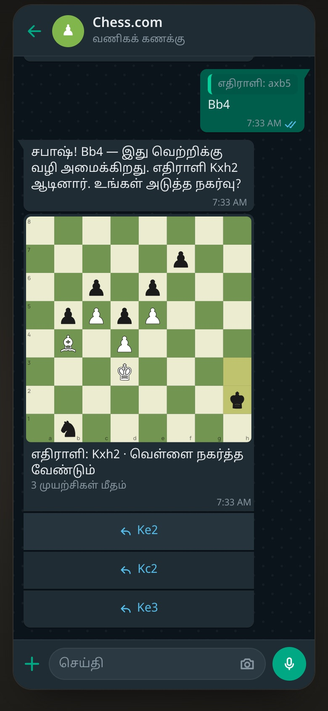
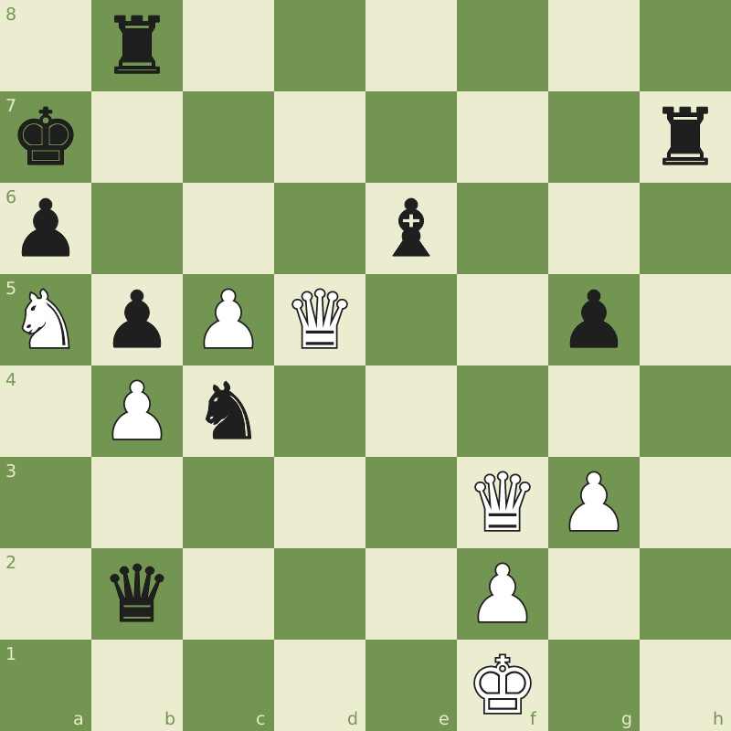

Chess on WhatsApp, in every child's language
A chess club that lives in a WhatsApp chat: one puzzle a day, and a coach who answers in the child's own language. Nothing to install, nothing new to learn. A concept I built for Chess.com, and it runs on a real number you can message.
India has the youngest world champion. This concept asks one question: what if playing chess started in the app people already open every day, in their own language? My father is the test case. He would never find his way around a chess app's menus, but he uses WhatsApp all day.
Opens a chat with Project 831's second number, +91 87478 03268, with PLAYCHESS typed in. Send it, pick a language, and tap a move. "stop" ends it.
Reading on a laptop? Scan this with your phone's camera to play on your phone.

The problem
The bet is that a new app is a bigger step than chess itself. The people this is for: a kid who watched Gukesh win and shares the family phone; a grandparent with an hour free and WhatsApp open; anyone who reads Hindi, Tamil or Marathi more easily than English. Each of them already uses one app confidently, every day.
1. A puzzle and a coach, inside the chat
In the concept, the daily puzzle from Chess.com's public API arrives every morning as a picture of the board with three moves to tap. Typing a move works too. A wrong move gets a hint that names the piece, then the square; the answer only after three tries. When it's solved, the message links to the puzzle on Chess.com: that's the way back to the app, for the ones who keep coming.
The coach is a careful agent run. The server works out whether the move is right before the model writes a word, and the model is only told as much of the answer as the child has earned. If the model is capped, slow or unavailable, the engine's own words answer instead, in the same language.

Try it in your browser
The 3D prototype: pick a city, solve today's puzzle, read the coach.
2. Only what WhatsApp can actually send
A prototype that WhatsApp couldn't send is a drawing.
So every message follows the Cloud API's rules: a business can only start a chat with a template Meta approved; after the child replies, a 24-hour window opens; reply buttons stop at three, each at 20 characters. The prototype checks every message against those limits before it shows it, and a panel beside the phone says which rule each one follows.
WhatsApp tells a business the country a number is from, and never its location or the phone's language. So the club's language comes from the place: in Pune it offers Marathi and English, in Chennai Tamil and English. On the real number, the country code picks the local language, and the other ten are one tap away in a WhatsApp list.
3. On a real number, safely
Message PLAYCHESS to Project 831's second WhatsApp number and you play today's puzzle. Project 831 is the sports venue I co-founded, and its bot already handles real bookings and payments on WhatsApp, so the demo had to be unable to touch any of that. A demo router in the bot answers the keyword before anything is logged, saved or shown to the team; the chess club itself runs as a separate service. It never sees your phone number or a WhatsApp token: only a hash, and the first three digits for the country.

For engineers how the demo can't touch the bookings
Project 831's bot forwards a demo visitor's messages to the club service, signed with HMAC and refused after five minutes. The service answers with the messages to send, and the bot sends them from its own number. The bot's demo test traps the database, payments, templates and team alerts, then walks the chess demo from the keyword to "stop": nothing may be touched.
Play it on WhatsApp
Send PLAYCHESS to +91 87478 03268. "stop" ends it.
Where the work said otherwise
- A menu of twelve languages became two on screen.
- I thought
- Let a viewer switch between every language.
- I saw
- A child doesn't browse twelve scripts, and WhatsApp can't say where they are anyway.
- So now
- The place offers its own language and English; the rest sit one tap further.
- The quick-reply chips weren't real.
- I thought
- Chips under every message, like a web chat.
- I saw
- WhatsApp has nothing like them.
- So now
- Reply buttons: three at most, 20 characters, and a template before anything else.
- Instant replies made the chat jump.
- I thought
- Answer as soon as the engine does, in a frame.
- I saw
- The screen leapt before you could read it.
- So now
- WhatsApp's rhythm: delivered, read, typing, then the reply, timed from a motion study.
- "Good morning" at midnight.
- I thought
- The puzzle arrives in the morning.
- I saw
- On the real number, people write at any hour.
- So now
- The greeting lost its morning: "Here's today's puzzle."
How it's built for engineers
- React 19, TypeScript and chess.js for the prototype; the puzzles come live from Chess.com's public API, with public-domain puzzles if it can't be reached.
- The coach is one serverless function: the server's verdict, a hint ladder, a 7-day reply cache, caps per day, per visitor and per session, and engine-written fallbacks. Claude when there's a key; the engine's words when there isn't.
- On WhatsApp, Project 831's bot forwards a demo visitor's messages to the club service, signed with HMAC and refused after five minutes. The service answers with the messages to send; the bot sends them from its own number. Board pictures are rendered to PNG on the server.
- Guards in tests: the 831 bot's demo test traps the database, payments, templates and team alerts, then walks the chess demo from the keyword to "stop". Nothing may be touched.
Where it stands
Live on WhatsApp, not measured yet: no one has used it but me. On the real number the coach currently answers with the engine's words, since it has no model key. The non-English text is a draft until native speakers check it, Tamil's piece names most of all. Next would be spoken hints in Hindi for people who don't read easily, and a teacher's view of who solved today's puzzle.